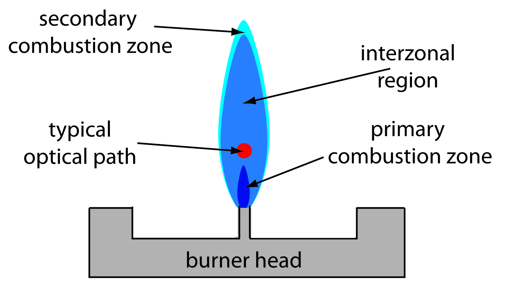
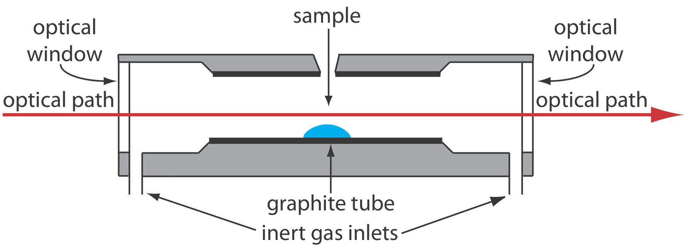
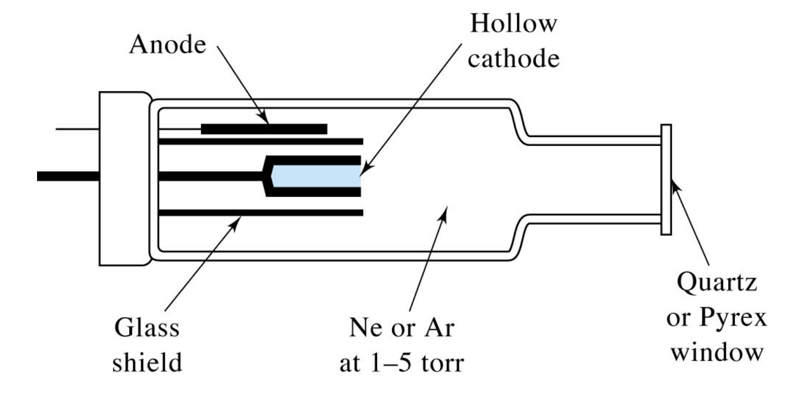
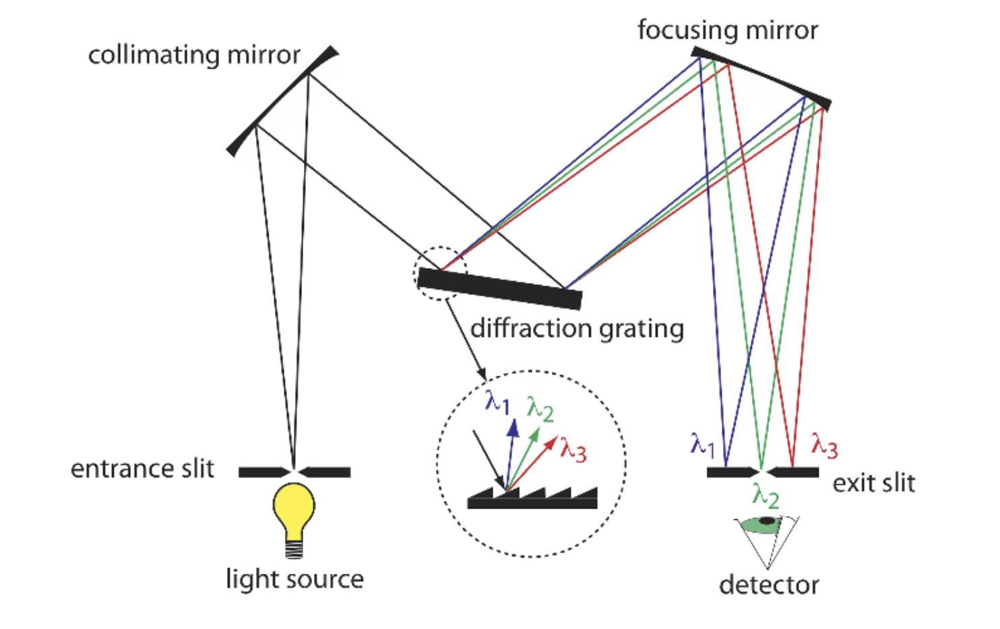
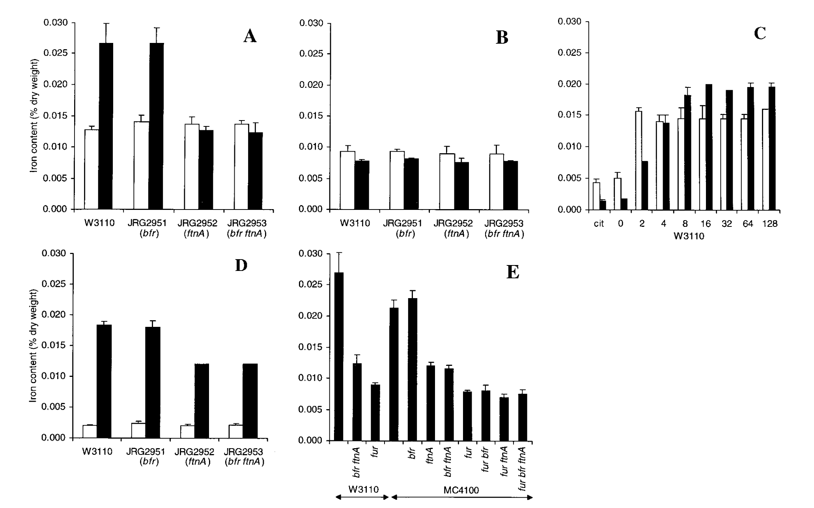

Iron Quantification using Atomic Absorption Spectroscopy
Since we’re working under the assumption that we have isogenic mutants with varying intracellular iron concentrations, it would only make sense to verify this assumption by quantifying intracellular iron of each strain. I’m planning on working with Dr. Lehr from the Chemistry department to do just this using AAS. This will be a crucial step in our project, as it will allow us to correlate the phenotypic differences we observe with the actual intracellular iron levels, thereby strengthening our conclusions about the role of iron in the observed phenotypes.
I must be honest: I know nothing about AAS. So here’s my trial at understanding the method and how it can be applied to our project.
Basically, Atomic Absorption Spectroscopy (AAS) is an analytical technique used to measure the concentration of specific elements in a sample. It works by measuring the absorption of light (usually in the ultraviolet or visible spectrum) by free atoms in the gaseous state. The amount of light absorbed is proportional to the concentration of the element in the sample. In our case, we would be measuring the absorption of light by iron atoms to determine the intracellular iron concentration in our bacterial strains. The specific mechanism of AAS is pretty interesting.
Atomization is when the analyte is first converted into free atoms. Two common forms of atomization are considered: flame atomization and electrothermal atomization (Harvey, n.d.).
Flame Atomization
It seems like there’s a careful balance to be struck when it comes to atomization. The sample must be heated to a temperature high enough to ensure that the analyte is completely atomized efficiently, but not so high that it causes oxidation or other chemical reactions that could interfere with the measurement. In our case, we would need to optimize the atomization conditions to ensure that we are accurately measuring the iron content without introducing any artifacts.
The flame can be demarcated into three zones: the primary combustion zone, the interzonal region, and the secondary combustion zone. The primary combustion zone is where radiation is emitted (not useful for absorption). The interzonal region is where the temperature is more stable and rich is free atoms. This is where we want to make measurements. The secondary combustion zone is where the remaining fuel and oxidant react, but it is generally not ideal for atomization due to potential interference from combustion products. Lower temperature also allows for molecular species, rather than free atoms (Harvey, n.d.).

Apparently, the atomization efficiency of flame atomization is quite poor for one interesting reason that caught my attention: the sample is oftentimes diluted by the combustion gases that form via the flame. I suppose this is one inherent downside of flame atomization.
Electrothermal Atomization
The sample in electrothermal atomization is basically placed within a graphite tube optically open at both ends and heated via resistive heating to a temperature high enough to atomize the sample. This method is more efficient than flame atomization because it allows for a longer retention time of the analyte within the optical path, as it is housed within a tube, which can lead to improved sensitivity and lower detection limits. But, as it turns out, this method is less precise relative to flame atomization for various reasons (Harvey, n.d.).

When choosing between these two methods, we would mainly consider the sensitivity requirements of our measurements. If we need to detect very low concentrations of iron, electrothermal atomization might be the better choice due to its higher sensitivity. However, if we are working with higher concentrations and require better precision, flame atomization would be more suitable.
Cathode Lamps
In AAS, cathode lamps are used as the light source to provide the specific wavelengths of light that correspond to the element being analyzed. For iron quantification, we would use an iron cathode lamp that emits light at the characteristic wavelengths absorbed by iron atoms. That is, depending on the identity of the analyte, one would change the element comprising the cathode to match the emission spectrum to the absorption spectrum of the analyte.

Absorbance Calculations
Absorbance is calculated using the formula A = log10(I0/I), where I0 is the intensity of the incident light and I is the intensity of the transmitted light. In other words, I0 is the lamp intensity reaching the detector with no analyte absorption (blank), and I is lamp intensity reaching the detector after passing through the atom cloud (sample). The absorbance is directly proportional to the concentration of the analyte in the sample, as in Beer’s Law (Mills and International Union of Pure and Applied Chemistry 1993).
We oftentimes have several wavelengths from the cathode tube that fall within the acceptable sensitivity rage of the instrument. Each of these wavelengths have a different P0. This matters because we want the greatest relative P0 in order to reduce uncertainty in our measurements. The greater the P0, the more accurate our absorbance measurements will be, which in turn will lead to more reliable quantification of intracellular iron levels in our bacterial strains. Hence, selection of the greatest P0 wavelength under the given conditions is imperative.
Monochromators
Monochromators are consist of two basic components: the prism and the slit. The prism (diffraction grating in the image) is used to disperse the light into its component wavelengths, while the slit is used to select a specific wavelength of light to pass to the detector. In AAS, the monochromator is used to isolate the specific wavelength of light that corresponds to the element being analyzed. This is where we get to choose which wavelength to use for the measurements.

The slits also allow us to eliminate background interferences from the inert gases filling the cathode or the graphite for instance. I suppose this is partly what the blank is for.
Interferences
Though this seldom happens, when the wavelength that we have chosen to analyze overlaps with a interfering species’ absorption line, our measurements become confounded. This is known as spectral interference. In such cases, we would need to either choose a different wavelength for analysis or use a background correction method to account for the interference. Just an interesting corner-case to be aware of. There seem to be various methods of background correction.
Application to Our Project
There are papers that have basically done the thing we’re attempting to do. Nonetheless, we need empirical evidence for our specific strains and conditions.
One of the strains we work with is the ∆fur mutant. We expect this mutant to have a higher concentration of Fe relative to the wild type. There’s a paper from 1999 that does the exact same thing (Abdul-Tehrani et al. 1999).
An atomic absorption spectrometer (Perkin-Elmer M2100) was also used to assay the iron contents of growth media (directly) and bacteria (after extraction with 30% nitric acid at 80°C for 6 h).
The main figure of interest is presented below:

The most important part of the figure is panel E. The x-axis represents the mutant (no label is WT) with W3110 and MC4100 the background strains they decided to use. The y-axis represents the intracellular iron content by % dry-weight. As we can see in the figure, in both strains, the ∆fur has a significantly lower Fe dry-weight % relative to the WT. Hopefully, we will see the opposite trend in the strains that we test…